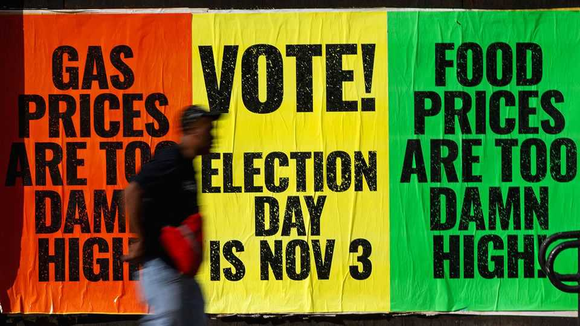
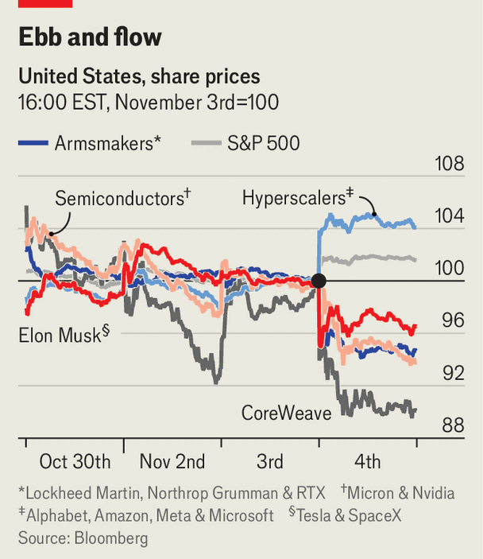

What markets make of the midterms
Democrats triumph. Investors yawn

Nov 5th 2026
IN GEOLOGY, AN earthquake causes a tsunami. In American politics, a blue tsunami is causing an earthquake. In midterm elections on November 3rd the Democratic Party swept all before it. Ruby-red Texas elected a blue senator for the first time in decades and crimson Kansas for the first time in nearly a century. As we published this the Senate race in Mississippi, where Donald Trump last won by 23 percentage points, was too close to call.
In financial markets, the response to these seismic events was, for the most part, a shrug. The S&P 500 index of large American firms ticked up the morning after and ended the day 1.6% higher. Yields on ten-year Treasury bonds edged down. The dollar weakened by a touch.
Investors’ indifference is understandable. They like certainty, and the Democratic wave precluded the nightmare scenario of an endlessly contested election or even a constitutional crisis. After the scale of his Republican Party’s rout became clear on election night, Mr Trump told the New York Times that he would accept the results. Call it the “phew” effect.
Markets also like the inevitable stasis of divided government—at least in America, where the business environment is already favourable (political paralysis is more of a problem in places like Europe, where the underlying conditions are not pro-growth). If anything, oversight from a reinvigorated Congress will probably make it a bit harder for the president to raise tariffs, wage wars and gut the public sector. Fights over the budget are inevitable, but then they would have been anyway. And Democrats have tended to be less willing than Republicans to court sovereign default by blocking rises to the federal debt ceiling.

Still, placidity on the surface conceals more churn beneath, especially in equities (see chart). One loser is Elon Musk. The right-wing sometime trillionaire wasted nearly $500m trying to help elect Republicans in this year’s races. Democrats will return the favour by poring over the government’s contracts with his carmaker, Tesla, and his rocketry firm, SpaceX. Their share prices fell by 3% and 4%, respectively.
Other federal contractors do not inspire as much personal animus among Democrats. But they can still expect scrutiny now that the opposition party controls the purse strings, especially in industries that lefties find objectionable. Private-prison operators such as CoreCivic and GEO, both of which have assisted Mr Trump’s heartless mass-deportation effort, shed value on fears that the incoming Congress would squeeze the immigration budget. Democrats are also unlikely to accept Mr Trump’s request to spend $1.5trn on defence, hitting Lockheed Martin, Northrop Grumman, RTX and other armsmakers.
The second group of losers comprises firms whose fortunes depend wholly on the buildout of artificial-intelligence data centres. These installations were supported by many Republicans—until they provoked a backlash which the Democrats ruthlessly exploited. Three of the four states which accounted for half of planned new capacity—Georgia, Ohio and Texas—have Republican governors. From next year all four will have Democratic ones. In Texas, the top destination for data centres, the governor-elect, Gina Hinojosa, campaigned on a promise to impose an immediate moratorium on their construction.
The share price of CoreWeave, a big independent data-centre operator, duly slumped by 10%. Micron, which makes memory chips that go into AI servers, lost 7% of its value. Nvidia, the $5trn behemoth of AI-chipmaking, slipped by 3%. Manufacturers of electrical components—lots of which are needed in data centres and in power plants that supply them with electricity—have also taken a knock. Before the elections the two parties had reached a tentative deal on a bill that would make it easier for big energy projects, such as pipelines and wind farms, to secure the necessary permits. Democrats may now wish to drive a harder bargain. The shares of GE Vernova, Vistra and Vertiv each lost around a tenth of their value.
Conversely, the blue wave has lifted industries that can count on Trumpian budget cuts being unwound (health care and clean energy) and large spenders on data centres. Big tech’s “hyperscalers” may now spend less, preserving their margins, while facing less competition for their existing capacity from CoreWeave and the like. Amazon and Microsoft were up by more than 6%. Alphabet gained over 3%. Even Meta, led by the manospheric Mark Zuckerberg, edged up. The tech bosses can expect to be hauled before Congress for adversarial hearings, both about AI and their obsequiousness towards Mr Trump. But at least their next earnings calls may turn out to be more amicable.■